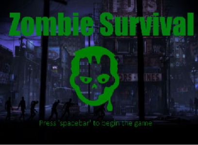
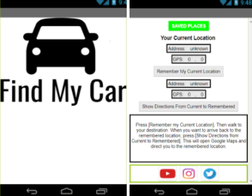
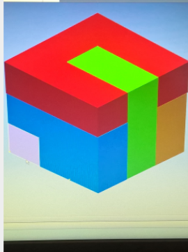

Project Gallery
Scratch Project
August 2017 - September 2017, Computer Software Engineering

In this project, my partner and I created a game from Scratch. The game was required to have easy to follow instructions with perfect user interaction. Also, the code was to use lessons we learned in class as well as having comments to explain how it functions and who wrote it. I did the coding for most of the game while my partner did the coding for the backstory of the game. All of the work was done smoothly without any communication errors or mistakes. A daily log was also required to keep track of what we were doing. The challenges I specifically overcame was coordinating teamwork on who was doing what. I learned to use features and components of Scratch to create my first "official" game.
Android App Project
September 2017 - October 2017, Computer Software Engineering

My partner and I created a “Find My Car App” that was selected off of the MIT App Inventor site. The problem statement for this project was that if you have this experience on not knowing where your vehicle (whatever you travel on such as bike, electric scooter, etc) is at, then this app is for you. This app helps you find your vehicle (whatever you travel on such as bike, electric scooter, etc) by, you opening the app and pressing “remember the location”, and then when you come back from wherever you went you reopen the app to find where you last parked your vehicle (whatever you travel on such as bike, electric scooter, etc) at. We were to create several ideas by brainstorming and consider which one was the best. Then we recorded a daily log of what we did to keep track of what we were doing. My partner and I split up the coding for the app, which I finished the "Remember Button", "Direction Button", and the "Location Sensor". I also added a social media bar for convenience and a introduction screen for good appearance. In this project, I learned how to create an Android Application using MIT App Inventor as it was a new experience to me.
Puzzle Cube Project
October 2015 - November 2015, Introduction to Engineering Design

For this project, the problem statement was that a local office furniture manufacturing company throws away tens of thousands of scrap ¾ hardwood cubes that resulted from its furniture construction processes. The material is expensive, and the scrap represents a sizeable loss of profit. I was to design, build, test, document, and present a three-dimensional puzzle system that is made from the scrap hardwood cubes. The puzzle system must provide an appropriate degree of challenge to a person who is three years of age or older. The criteria of this project was the puzzle to contain 5 puzzle pieces, some puzzle pieces should interlock, no two puzzle pieces should be the same, puzzle must be fabricated from 27 ¾” hardwood cubes, and each individual puzzle must consist of at least 4 but no more than 6 hardwood cubes permanently attached to each other. A presentation was also required, which was difficult but nonetheless I had to shrug off and get used to. In the end, I got a good grading on the project because it met most of the criteria. Through this project I learned to get used to the Autodesk application as I was still a beginner at the time.